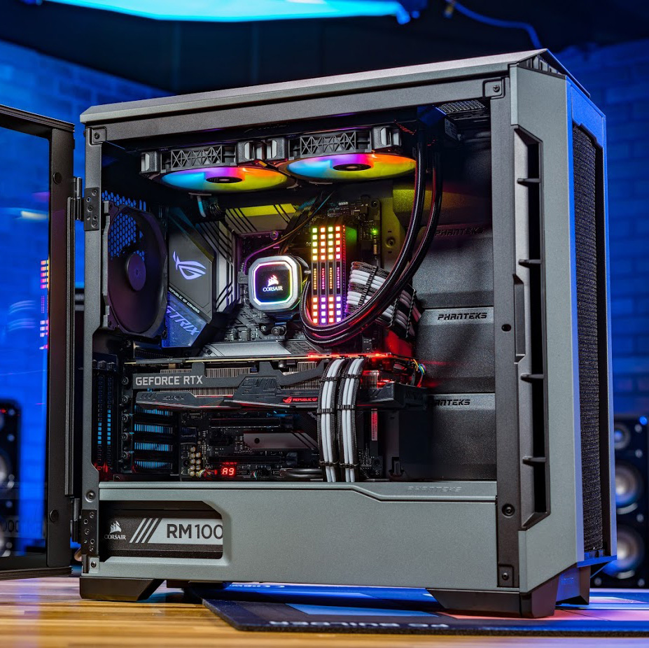
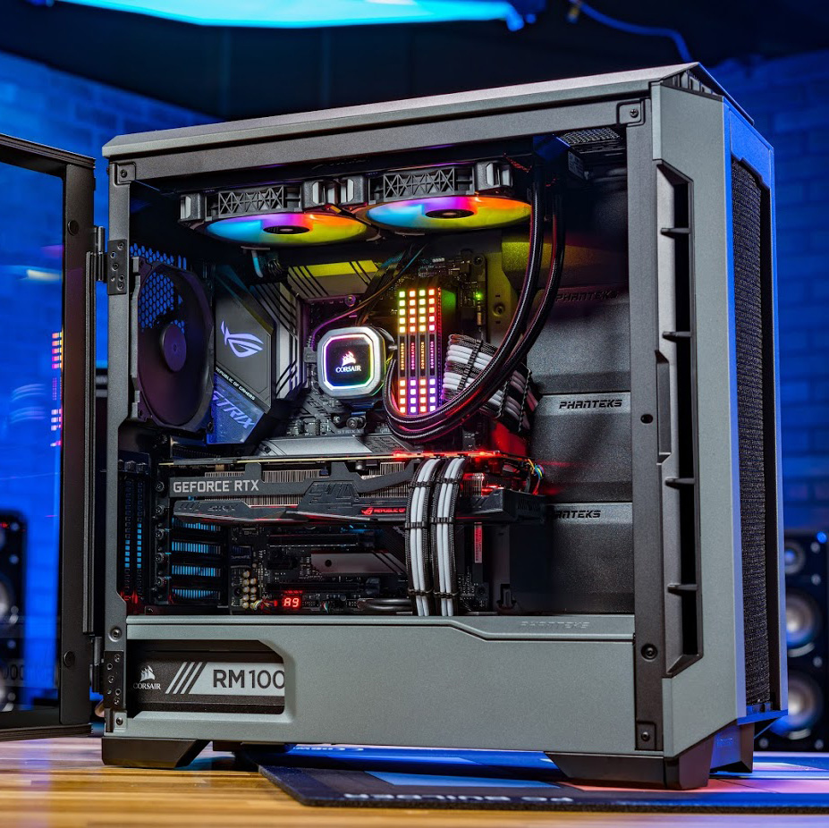
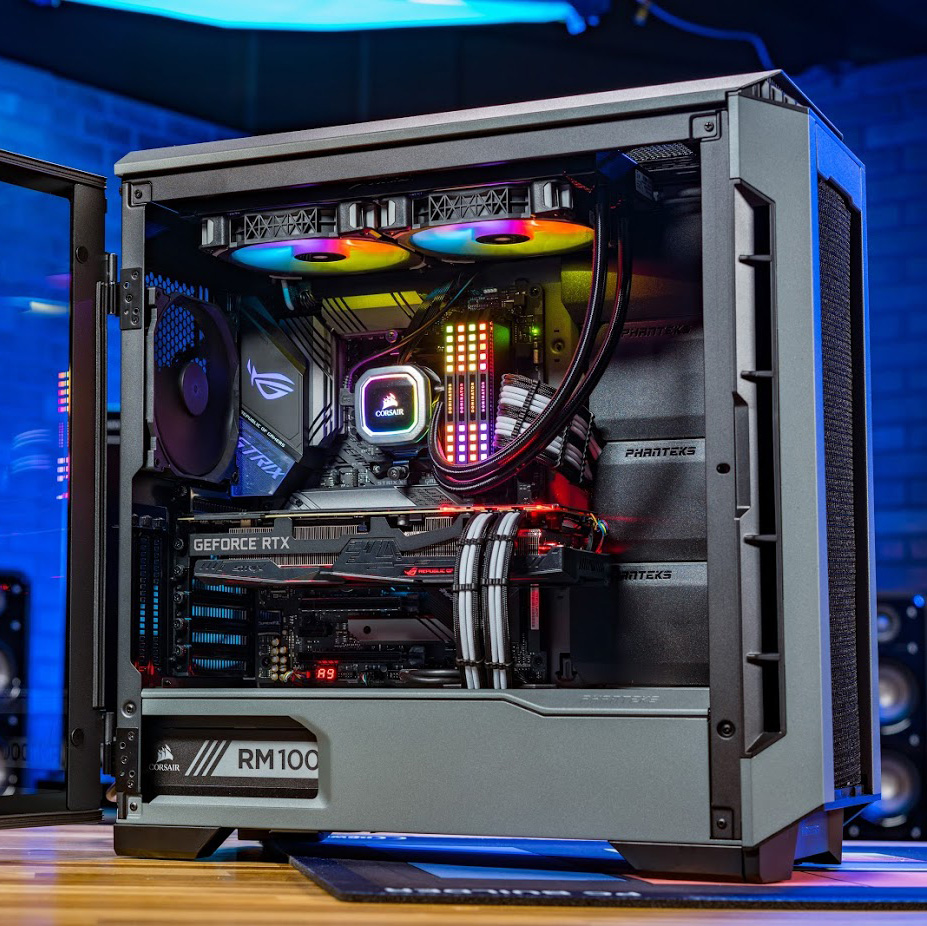

Atlikti darbai
Jeigu domina mano praeito darbo kokybe, čia rasite mano projektus.
 


ApieStudentas VGTU Universitete, kuris bando šiuo metu atsiskaityti už laboratorinius darbus. StudentasStudentas, kuris turi labai mažai laiko, ir partities gyvenime.
|
Daug patirties neturiu, bet jeigu jos yra, ją rasite čia.
MARTYNAS ŠIAULIANSKIS
Paprasciausias studentas, kuriam visados truksta laiko uzbaigti darbus iki galo, bet visados sugeba nustebinti ir viska sutvarkyti.
Žalioji g.10, Jokubavas, Kretingos r.
12345678
martynas.siaulianskis@stud.vilniustech.lt
2021 - Dabar
Vilnius Tech / Vilniaus Gedimino Technikos Universitetas, Vilnius
Šiuo metu vis dar studuoju VGTU universitete
2014 - 2021
IES Joan Fuster Sueca & IES el Saler, Valencijos Regionas
Šiuose vietose įgijau savo vidurini išsilavinima, kuris man davė daug žiniu, patirties, ir gyvenimo įspūdžių.
2017 - 2020
Valencija, Valencijos Regionas, Ispanija
Jeigu domina mano praeito darbo kokybe, čia rasite mano projektus.
